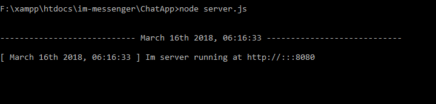
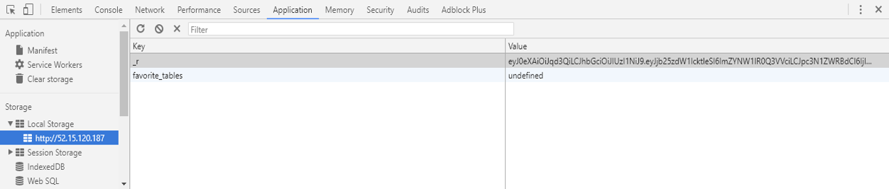
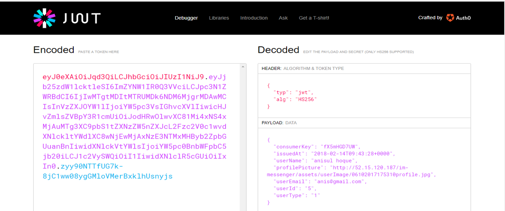
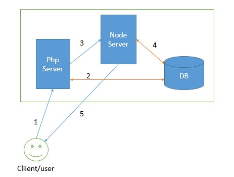
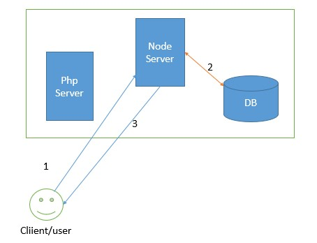

Since server setup is not included in support and Linux has too many distributions with different
installation process, that's why a simple and common setup process is supplied with some description
about ssl for customers help. It is recommended by the developer that you must configure and test it in
localhost with providing description first. Then put it on live server. Live server support service is paid.
Author help is entirely available for local server (Ultra viewer or anydesk). Query regarding live server will
not be answer without payment. Documentation contains both local and live server installation
instructions.
You require to configure php.ini file to fix the upload limits in apache server. Find these lines in php.ini and
change the values.
Upload_max_filesize=200M post_max_size=200M memory_limit=300M allow_url_fopen=On
Now, restart your apache server. Otherwise, video and file upload, throw error.
If using Mysql 5.7 or greater then put this two lines at the end in mysql.cnf or mysql.ini and restart the mysql server.
[mysqld] sql-mode=""
Go to your browser and type http://localhost/phpmyadmin and click import. Click choose file button. Now
browse to extra folder, select the im_messenger.sql file, and click open. Now go to the bottom of the page
and click Go button. Now a database named im_messenger created with some tables. Here localhost means
local server or domain without ssl.
Create a folder im-messenger inside xampp/htdocs folder. Place all contents on im_messenger.zip into that folder.
Open "xampp\htdocs\im-messenger\application\config\database.php" and configure db settings development.
if ($mode == "development") { $db['default']["hostname"] = "localhost"; $db['default']["username"] = "root"; $db['default']["password"] = "root"; $db['default']["database"] = "im_messenger"; } else if ($mode == "test_server") { $db['default']["hostname"] = "localhost"; $db['default']["username"] = "root"; $db['default']["password"] = ""; $db['default']["database"] = "im_messenger"; } else if ($mode == "production") { $db['default']["hostname"] = ""; $db['default']["username"] = ""; $db['default']["password"] = ""; $db['default']["database"] = ""; }
Open "xampp\htdocs\im-messenger\ChatApp\databaseConfig.js" and configure db settings for node.js
const dbSettings={
connectionLimit: 10,
host: '127.0.0.1',
user: 'root',
password: 'root',
database: 'im_messenger'
};
const opt={ key: fs.readFileSync('/etc/live/xyz.com/privkey.pem'), //location of private key file.required. extension can be .key cert: fs.readFileSync('/etc/live/xyz.com/cert.pem'), //location of certificate file.required. extension can be .cert ca: fs.readFileSync('/etc/live/xyz.com/chain.pem') // optional };
var socket=io.connect("wss://Domain.com:8443");
$config['base_url']= "https://Domain.com/im-messenger"; $config['socket_url'] = "https://Domain.com:8443";
var socket=io.connect("ws://"+location.hostname+":8080");
var socket=io.connect("ws://Domain.com:8080");
$config['base_url'] = "$root"; $config['socket_url'] = "http://localhost:8080";
$config['purchase_code'] ="" ;
$config['encryption_key'] = 'immessengerHashes1@2)98908000gfhj'; $config['CONSUMER_KEY'] = 'Nntwiso9gXreaB2msyCFz'; $config['CONSUMER_SECRET'] = 'yYNIn86DMxSiGSarZehUZ';
let CONSUMER_SECRET = "yYNIn86DMxSiGSarZehUZ";
Otherwise Jwt verification throw error in node server.
This application has fixed file upload size to 20mb max in client side. If you want to change the max limit in
client side check this variable max_upload_size in
20971520(20mb) to your desired limit. 20971520 is in bytes. Use an online megabyte to byte converter.
Exp: https://www.gbmb.org/mb-to-bytes
Upload limit is also set on PHP level. Check this function sendmessage_post() in
$config['max_size'] = '20480'; // value is in KB
For Profile picture Upload limit is set to 5mb. Value is in bytes. Check Function
$("#profileImageFile").change(function (event) { ... });
Located in
For changing in PHP side check Function profilePictureUpload_post() in file
$config['max_size'] = ' 5120 '; // value is in KB
To prevent miscellaneous script execution in upload folders two .htaccess files has been added in
uploads folder with defined file types.

Socket.io is a realtime node. js library to receive a data in a real time frame. It transmits data using emit and listen
and receive the data using on function. Since socket.io didn’t show data in browser network tab, you have to put
a console.log inside on to check the data structure.
You will obtain the socket connector in this file at socket block bottom of the page.
|
NAME |
TYPE |
DESCRIPTION |
|
joinRoom |
emit |
To connect a room. The way is like room-7. 7 is message group id. |
leaveRoom |
emit |
Leave the room. |
typing |
emit |
Announce keyboard event if user typing something. |
notTyping |
emit |
Announce keyboard event if the user gave up typing. |
fetchOnReconnect |
emit |
Announce user is reconnected to the server. |
newMessage |
on |
Receives message from server sends by the user |
getFetchOnReconnect |
on |
Fetch pending data, if any, after network connection back in for user. |
userTyping |
on |
Recovers user typing data for that group |
receiveSeen |
on |
Recovers user seen data |
userNotTyping |
on |
Recovers data if a user stops typing in that group |
reconnect |
on |
Check socket.io documentation |
register |
emit |
Registering a user with the server |
reconnecting |
on |
Check socket.io documentation |
updateGroupNameData |
on |
Receives new group name from the server if changed by any user. |
addNewMember |
on |
Get a recent member list from server if any new member added by any other member. |
deleteAMember |
on |
Find a recent member list from server if any member deleted from the group. |
pendingMessage |
on |
Get pending message information from server if any. |
updateStatus |
on |
Acquire the message about member online, offline info |
updateStatusOnReconnect |
on |
Draw the message about member online, offline info if the current user reconnect to server again. |
blockStatus |
on |
Gets group block status. |
muteStatus |
on |
Gets the group mute status. |
sendText |
emit |
For sending text messages using socket.io. |
addNewGroup |
on |
Send the current active group with update information. |
getSessionId |
on |
Provides a jwt encoded browser identification token (60 |
You will see this connection in api functions. All of them are emit type, transmit data to socket server and socket server announce it to proper receivers. The register is common and added with every role listed in the PHP function column. Look into this file.
"xampp\htdocs\im-messenger\application\modules\imApi\controllers\ImApi.php"
|
NAME |
PHP FUNCTION |
DESCRIPTION |
sendMessage |
1. memberUpdate 2. sendMessage_post
|
Sends processed message and updates to the server. |
deleteMember |
1. deleteMember_post 2. leaveGroup_post
|
Sends updated group member list to the server |
updateGroupName
|
1. changeGroupName_post |
Sends updated the group name to the server |
announceSeen |
1. getMessage_get |
Send message seen status and data to the server |
addMember |
1. addGroupMember_post |
Sends updated group member list to the server |
blockUpdate |
1. blockGroup_post 2. unblockGroup_post |
Sends group block, unblock status to the server |
muteUpdate |
1. muteGroup_post 2. unmuteGroup_post |
Sends group user mute unmute status to server |
"\xampp\htdocs\im-messenger\ChatApp\server.js"
This file is the socket server. The table billow shows the on and emit function list. There can be multiple emit for a single on function (depends on programming logic and demands).
|
On |
Emit |
Notes |
disconnect |
updateStatus |
Check DeleteSocket()->deactivateUser() function |
muteUpdate |
muteStatus |
|
blockUpdate |
blockStatus |
|
joinRoom |
|
Join a room. Room id is group id. |
leaveRoom |
|
For leave a room |
notTyping |
userNotTyping |
|
typing |
userTyping |
|
register |
updateStatus updateStatusOnReconnect getSessionId |
Check activeUser() function |
addMember |
addNewMember |
|
deleteMember |
deleteAMember |
|
updateGroupName |
updateGroupNameData |
|
sendMessage |
newMessage pendingMessage |
Check pendingMessage() and sendMessage() function |
announceSeen |
receiveSeen |
|
fetchOnReconnect |
getFetchOnReconnect receiveSeen |
Check announceSeen function |
error |
|
Only log error in server console |
sendText |
newMessage pendingMessage addNewGroup |
Check sendMessage() function. |
{
"consumerKey": "fX5mHGD7UW",
"issuedAt": "2018-02-14T09:43:28+0000",
"userName": "anisul hoque",
"profilePicture": "http://52.15.120.187/im-messenger/assets/userImage/06102017175310profile.jpg",
"userEmail": "anis@gmail.com",
"userId": "5",
"userType": "1"
}
UserName : required
profilePicture: required
userEmail: required
userId: required
This token is saved on user browser after login in local storage as encripted in a key _r


Send File/Block and mute/ Leave group/ Remove member

Send text message/ New message
